Granular Synths Collection
·
·
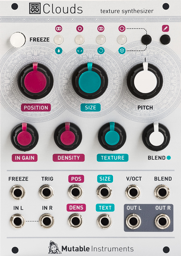
Mutable Instruments Clouds
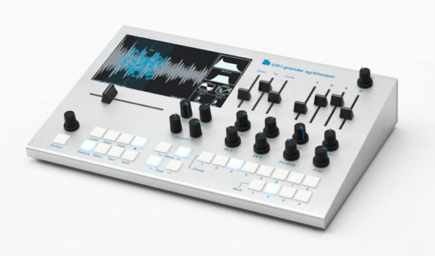
The Tasty Chips GR-1
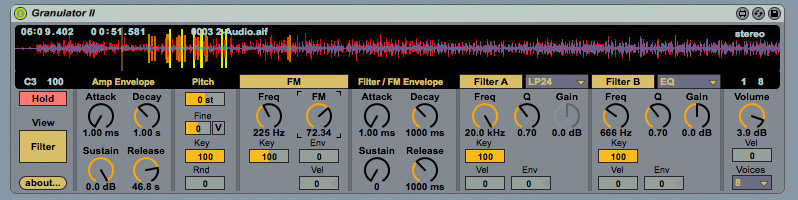
Robert Henke Granulator II
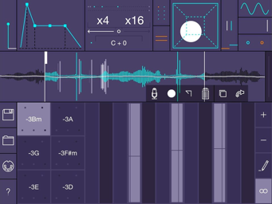
Humbletune Tardigrain
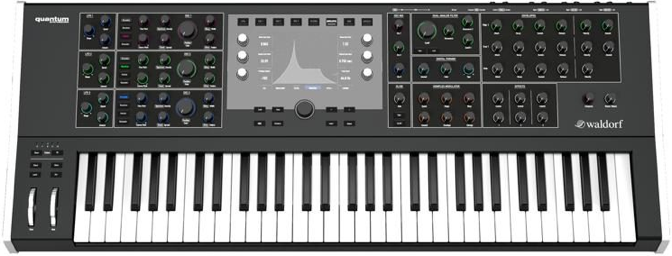
Waldorf Quantum
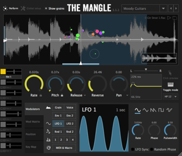
Sound Guru The Mangle
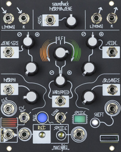
Make Noise Morphagene
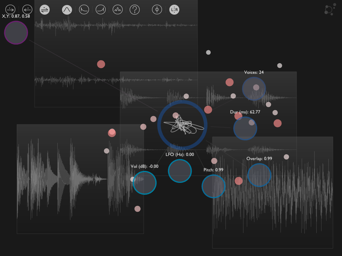
Borderlands Granular
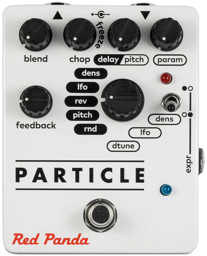
Red Panda Particle
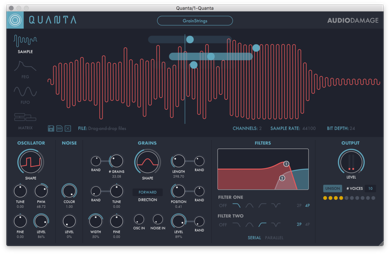
Audio Damage Quanta
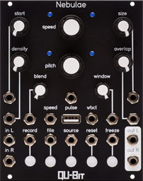
Qu-Bit Nebulae
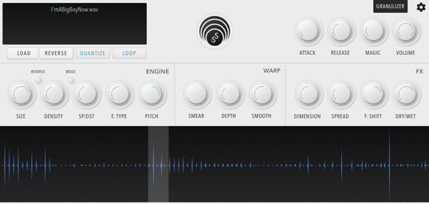
Inertia Sound Systems Granulizer
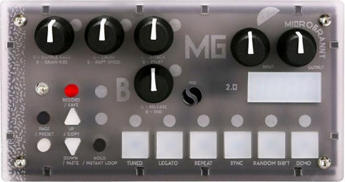
Bastl Instruments microGranny 2
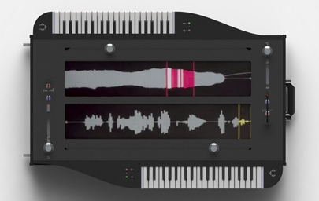
Collidoscope
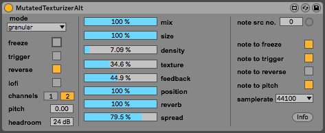
Mutated Texturizer
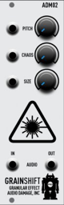
Audio Damage Grainshift
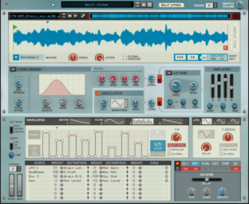
Propellerhead Reason Grain
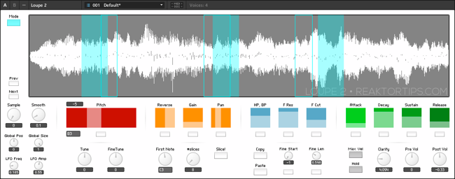
Loupe 2
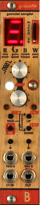
Bastl Instru- ments Grandpa
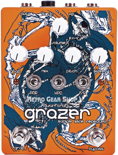
Dwarfcraft Grazer
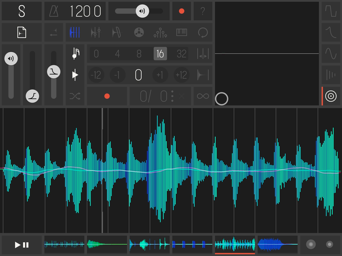
Marcos Alonso Samplr
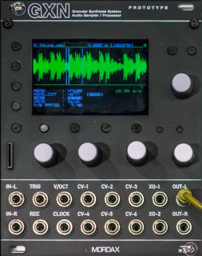
Mordax GXN
Steinberg Padshop Pro
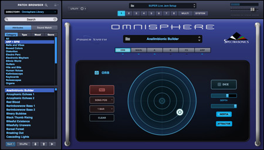
Spectrasonics Omnisphere 2